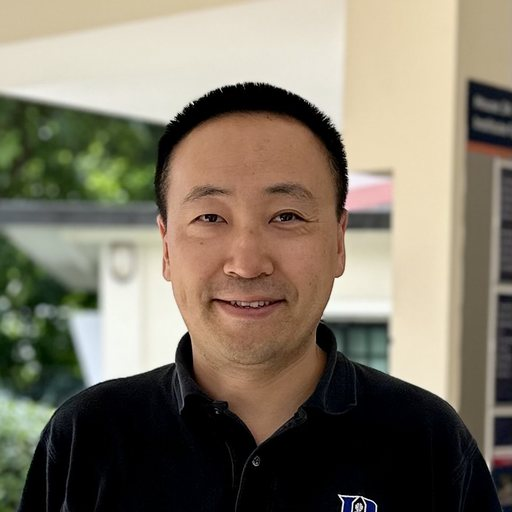
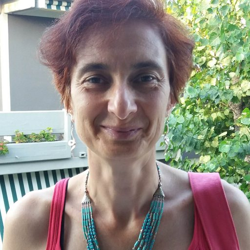
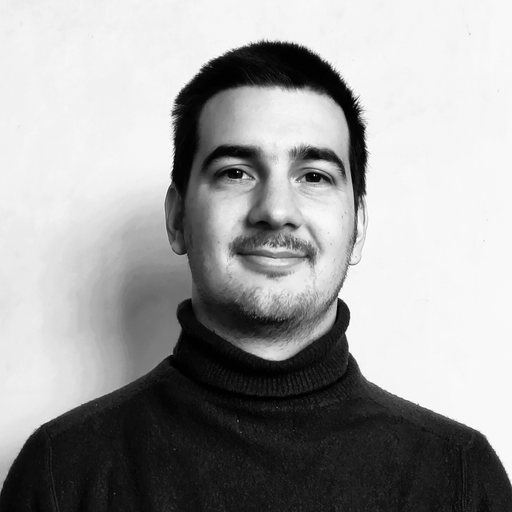
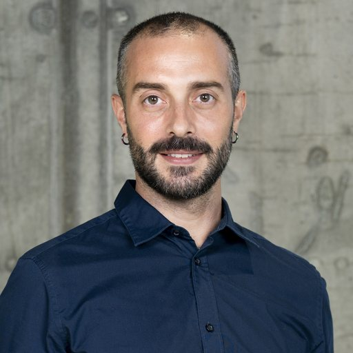

Li Ma Chair 2026

Li is Professor of Statistics at the
University of Chicago (USA). His current research interests
include tree-based methods, generative models, nonparametric modelling
and inference, and applications to biomedical problems. For more
information, visit his website.
Jim Griffin Chair elect 2026
Jim is Professor of Statistical Science at
University College London (UK). His work on Bayesian
nonparametrics concentrates on computational methods, regression and
time series models, and applications in ecology, economics and sports
science. For more information, visit his
website.
Alessandra Guglielmi Section chair 2025

Alessandra is a Full Professor of Statistics
in the Department of Mathematics, Politecnico di Milano (Italy).
Her research interests are mainly focused on Bayesian nonparametric
inference, with emphasis on mixture modelling and the computational
aspects of these classes of models. For more information, visit her
website.
Tommaso Rigon Program chair 2026–2027

Tommaso is an Associate Professor of
Statistical Science in the Department of Economics, Management and
Statistics at the University of Milano-Bicocca (Italy). His
research focuses on applied Bayesian modelling, including Bayesian
clustering and nonparametric methods, computational statistics,
generalised Bayes, functional data analysis, mixture models and
species sampling models. For more information, visit his
website.
Andrea Cremaschi Secretary 2025–2026

Andrea is an Assistant Professor in the
School of Science and Technology at IE University (Spain). His
research focuses on both methodological and applied aspects of
statistics, particularly within the Bayesian nonparametric framework.
Some of his primary interests are mixture models with applications in
biomedical studies, behavioural science and cohort studies. For more
information, visit his
website.
Filippo Ascolani Treasurer 2026–2027
Filippo is an Assistant Professor in the
Department of Statistical Science at Duke University (USA). He
recently obtained his PhD in Statistics at Bocconi University. His
research focuses on Bayesian statistics, particularly nonparametric
methods, the theory of Bayesian computation and the analysis of
complex data structures. For more information, visit his
website.